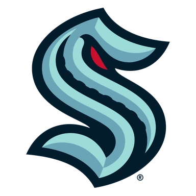
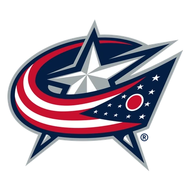
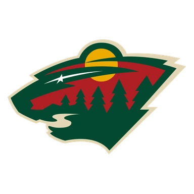
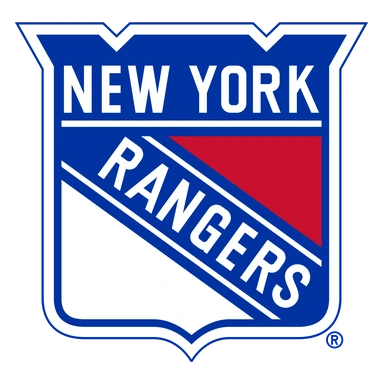

Калгари — Филадельфия итог матча 9 ноября
- ТурнирНХЛ
Коротко о матче
- Итог: Калгари — Филадельфия 4:3 (ОТ).
- Расчёт модели до матча не сохранился.
- По форме команды близки: Калгари — 2 победы в последних 5, Филадельфия — 1 победа.
- Голы за игру в последних 5: Калгари — 2,8 забито и 3,0 пропущено, Филадельфия — 3,0 и 3,8.
- Дома Калгари: 5 побед в 9 матчах; в гостях Филадельфия: 1 победа в 8.
- Последняя очная встреча — 01.01.2026: Калгари — Филадельфия 5:1.
Форма: последние матчи
Калгари 2 победы из 5

В6:2 П2:5
П2:5 В2:1
В2:1- П1:2
 П3:5
П3:5
Филадельфия 1 победа из 5

П3:4 П2:5
П2:5 В6:3
В6:3
П2:4
П2:3
Личные встречи
- Калгари5:1Филадельфия
- Филадельфия1:2Калгари
- Филадельфия3:6Калгари
- Калгари6:3Филадельфия
Положение в таблице
| Команда | Место | И | В | П | Голы | Очки |
|---|---|---|---|---|---|---|
| Калгари | 10 | 18 | 8 | 10 | 46:63 | 17 |
| Филадельфия | 16 | 19 | 4 | 15 | 42:65 | 13 |
Страница клуба: Калгари · Страница клуба: Филадельфия · Лига: НХЛ · Прогноз на сегодня: НХЛ · Все матчи дня колодой
Материалы носят информационный характер и не гарантируют результат. Реклама букмекеров на сайте не размещается. Сайт только для совершеннолетних (18+).